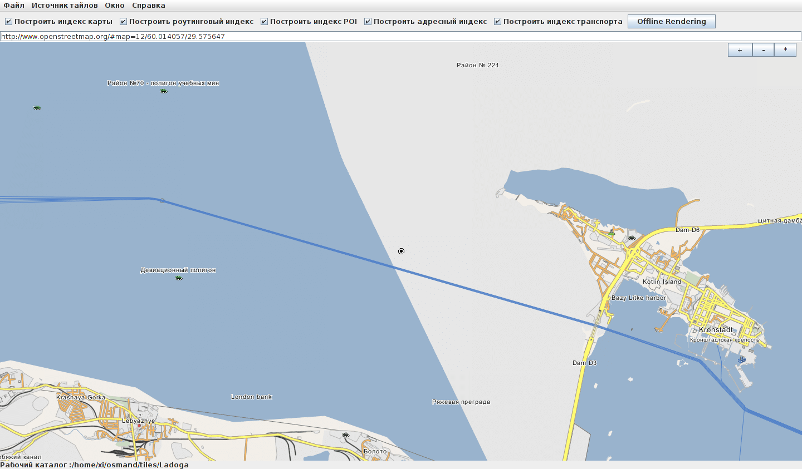
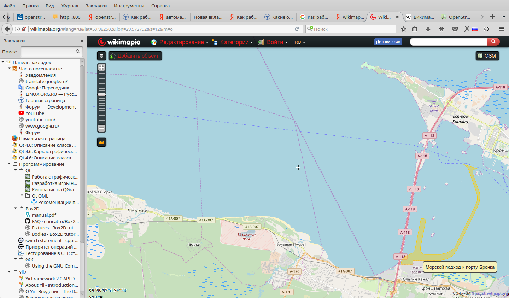
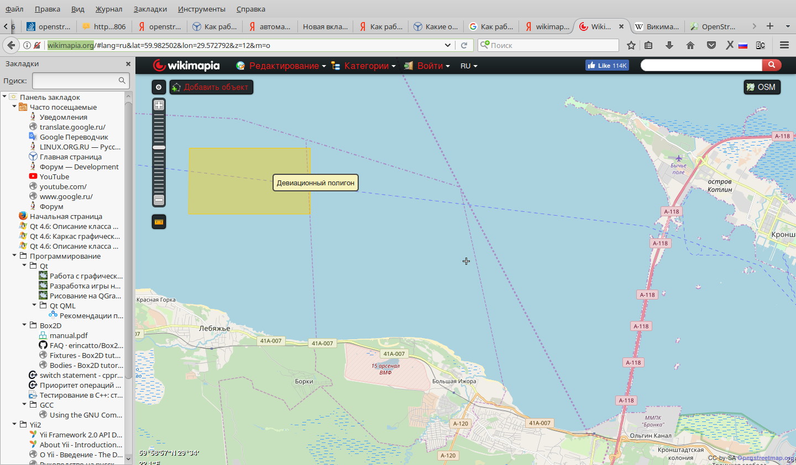
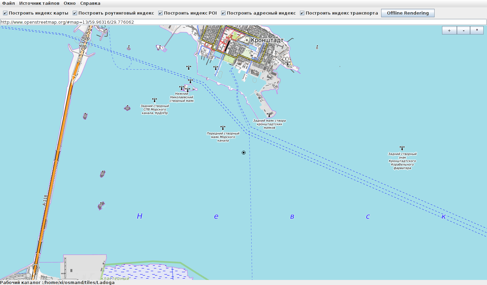
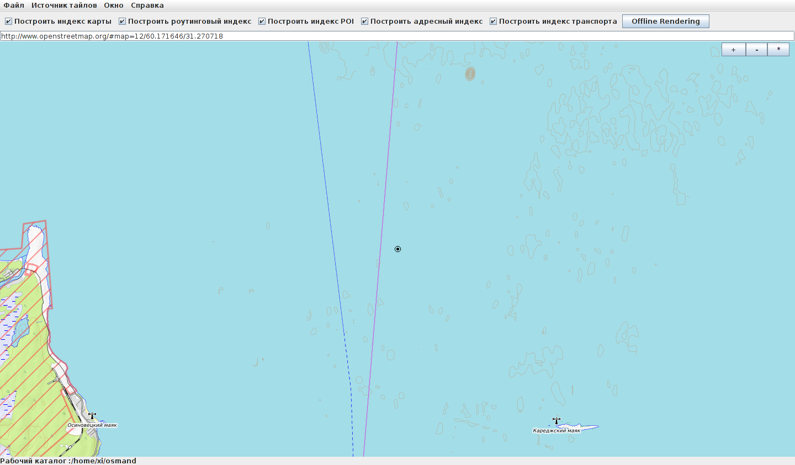
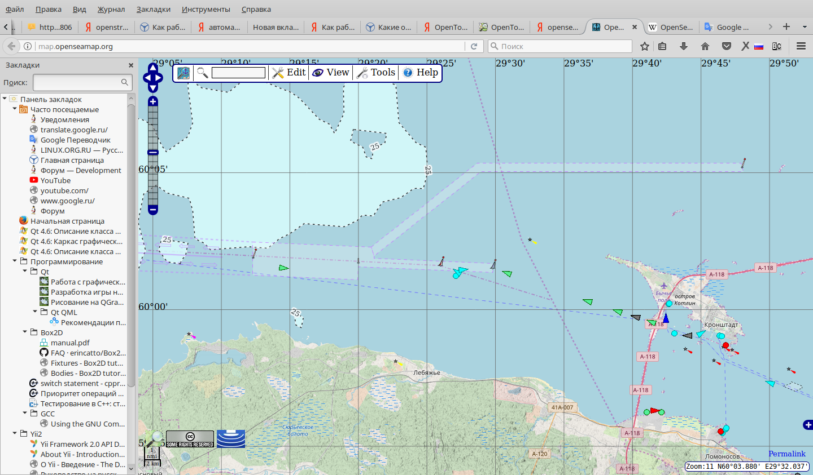
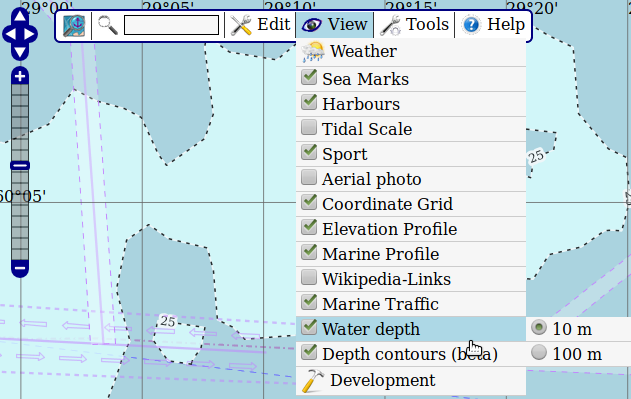
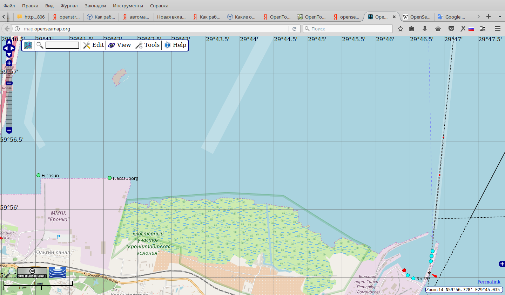
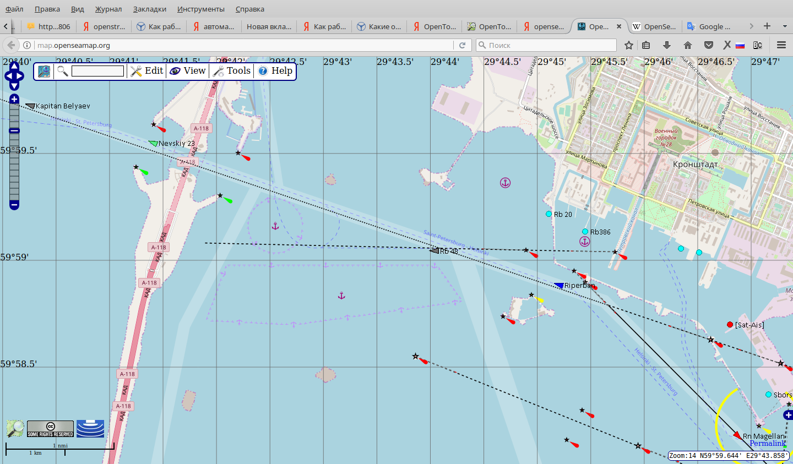
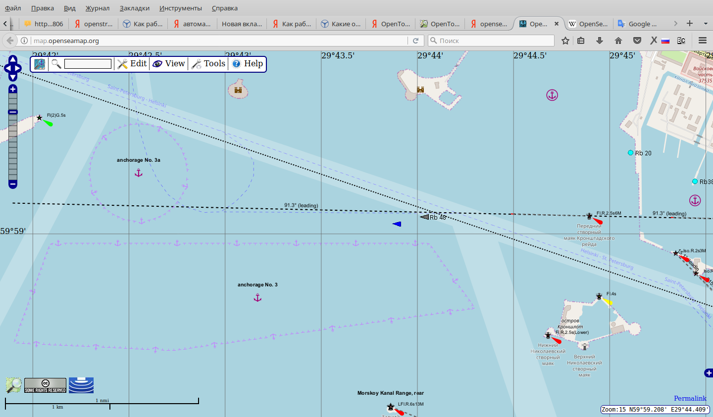

Wikimapia
Карта под названием Wikimapia показывает линии прохода судов и некоторые опасные для передвижения судов районы. Все отображается очень условно:

Если смотреть карту на самом сайте http://wikimapia.org, то при наведении мышкой на разные области карты дополнительно будут показываться области желтого цвета, которые без мышки не видны:


OpenTopoMap
Карта OpenTopoMap показывает линии прохода судов и маяки. Опасные районы не показывает. Зато для некоторых акваторий отображаются изолинии морского дна, без указания глубины:


OpenSeaMap
Проект OpenSeaMap дает самую подробную информацию для судовой навигации из всех перечисленных здесь открытых источников. Он показывает маршрутные линии, буи, маяки, места стоянки, фарватеры, глубины с изолиниями в 10 и 100 метров, суда.

На вышеприведенном скриншоте светлоголубая область в левой верхней части - это глубина более 10 метров.
Отрисовка объектов на карте зависит от настроек видимых объектов и от степени приближения к карте. Настройка видимых объектов происходит через меню View:

Некоторые объекты начинают быть видны только при приближении. Например, при увеличении 13, на участке между Крондштатом и Ольгиным каналом почти ничего нет. К порту Ломоносов идет только одна путевая линия "Крондштат-Ломоносов":
А при увеличении 14 становятся видны светлоголубые области фарватеров, дополнительные путевые линии к порту Ломоносов, названия судов. Пример с двумя скриншотами:


При увеличении 15 видны номера допустимых мест стоянок, обозначения и названия маяков:
